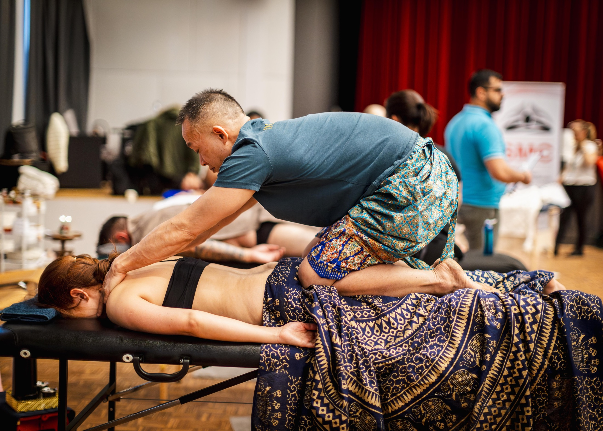

Personal attention
Start with a conversation about how you feel and what brings you here. The session is shaped around that encounter.
Private Practice · Zurich
Your work, your responsibilities, your pace of life. Here, the attention returns to you.

Start with a conversation about how you feel and what brings you here. The session is shaped around that encounter.
A thoughtful, private setting for high-profile individuals, entrepreneurs and professionals who value a personal approach.
Bodywork, breath, mindset, movement and selected technology can come together within one considered session.
Room to be yourself
Tears are welcome here. There is no need to hold everything in, explain what you feel or hurry to compose yourself. Sometimes strength begins with allowing ourselves to feel.
Your pace. Your comfort. Your choice.Your first visit
Contact Matthew directly to discuss your interests, availability and any questions before booking.
At the studio near Sihlcity, take a moment to settle. Talk through the focus and agree on the approach together.
The work develops with your feedback. Touch, pace and intensity remain part of an ongoing conversation.
Reflect on how you feel and discuss whether further sessions or a workshop would make sense for you.
Email info@healwell.ch or contact Matthew on WhatsApp at +41 76 506 74 88. Availability, session length and fees are agreed directly.
Matthew is EMR-registered for five methods. Reimbursement depends on your supplementary insurance, the method and your policy. Please check coverage with your insurer before booking.
The Healwell studio is at Rüdigerstrasse 7, Ground Floor, 8045 Zürich, near Sihlcity. The Contact page includes directions.
English and German are working languages; Matthew also has some Mandarin. The website is available in ten languages. Please discuss your preferred session language when enquiring.
Matthew Hua · Zurich